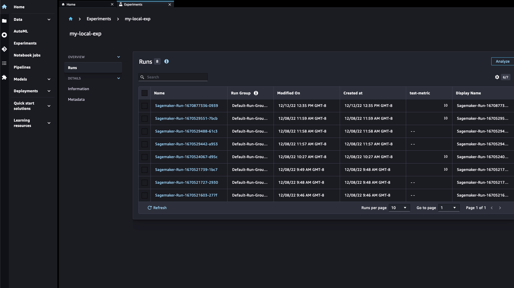

Additional supported SDK
Important
As of v2.123.0sagemaker.experiments.run rather than the following smexperiments
module.
The following section describes how to create a SageMaker Experiment with the SageMaker Experiments SDK.
Create an Amazon SageMaker Experiment with the SageMaker Experiments SDK
Create an Amazon SageMaker experiment to track your SageMaker training, processing, and transform jobs.
The following procedure shows you how to create a SageMaker experiment for a SageMaker training, processing, or transform job. Steps labeled as (Studio) describe how to view the experiment in Amazon SageMaker Studio. You don't have to run the experiment in Studio to view the experiment in Studio.
-
Import the
sysmodule to install the SDKs.import sys -
(Optional) The Amazon SageMaker Python SDK
, comes preinstalled in SageMaker Studio. If you plan to run your code outside Studio, install the SageMaker Python SDK. !{sys.executable} -m pip install sagemaker -
Install the SageMaker Experiments Python SDK
. !{sys.executable} -m pip install sagemaker-experiments -
Import modules.
import time from time import strftime import sagemaker from smexperiments.experiment import Experiment from smexperiments.trial import Trial from smexperiments.trial_component import TrialComponent from smexperiments.tracker import Tracker -
Get the execution role and create the SageMaker session.
role = sagemaker.get_execution_role() sm_sess = sagemaker.session.Session() -
Create a SageMaker experiment. The experiment name must be unique in your account.
Note
The
tagsparameter is optional. You can search for the tag using Studio, the SageMaker console, and the SDK. Tags can also be applied to trials and trial components.create_date = strftime("%Y-%m-%d-%H-%M-%S") demo_experiment = Experiment.create(experiment_name = "DEMO-{}".format(create_date), description = "Demo experiment", tags = [{'Key': 'demo-experiments', 'Value': 'demo1'}]) -
(Studio) To view the experiment in SageMaker Studio, in the left sidebar, choose the Experiments.
After the code runs, the experiment list contains the new experiment. It might take a moment for the list to refresh and display the experiment. The filter on the experiment tag is also displayed. Only experiments that have a matching tag are displayed. Your list should look similar to the following:

-
Create a trial for the experiment. The trial name must be unique in your account.
demo_trial = Trial.create(trial_name = "DEMO-{}".format(create_date), experiment_name = demo_experiment.experiment_name, tags = [{'Key': 'demo-trials', 'Value': 'demo1'}]) -
Create a trial component as part of the trial. The trial component is the SageMaker job.
Add the ExperimentConfig parameter to the appropriate method. The SageMaker jobs listed in the following table are supported.
Job SageMaker Python SDK method Boto3 method Training Estimator.fit CreateTrainingJob Processing Processor.run CreateProcessingJob Transform Transformer.transform CreateTransformJob The following examples are for a training job. The
Tagsparameter adds a tag to the trial component.ExperimentNameisn't specified because the trial was associated with the experiment when the trial was created in an earlier step.Using the SageMaker Python SDK
sagemaker.estimator.Estimator( ..., sagemaker_session = sm_sess, tags = [{'Key': 'demo-jobs', 'Value': 'demo2'}]) estimator.fit( ..., experiment_config = { # "ExperimentName" "TrialName" : demo_trial.trial_name, "TrialComponentDisplayName" : "TrainingJob", })Using Boto3
create_training_job( ..., "ExperimentConfig": { # "ExperimentName" "TrialName" : demo_trial.trial_name, "TrialComponentDisplayName" : "TrainingJob", }, "Tags": [{'Key': 'demo-jobs', 'Value': 'demo2'}]) -
(Studio) In the experiment list, double-click the experiment to display a list of the trials in the experiment. In the Studio UI, trials are referred to as run groups and trial components are referred to as runs. Your list should look similar to the following:
 -
(Studio) To view information about the experiment, trial, and job (trial component), see View, search, and compare experiment runs.
To clean up the resources you created, see Clean Up Amazon SageMaker Experiment Resources.